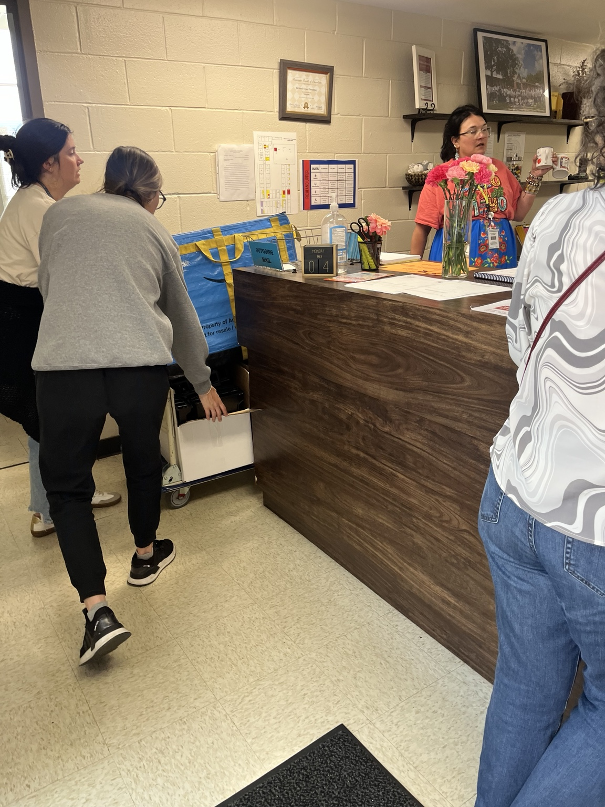

The Wildflower Project
Planting hope in every classroom.The Wildflower Project is MLA's umbrella initiative for school-based outreach — bringing supplies, clothing access, and community support directly into schools across Mississippi.
Where schools and community meet.
Mississippi children spend most of their days in school buildings. The Wildflower Project puts resources inside those buildings — so kids don't have to go without, and families don't have to go far.
Through school partnerships, on-site closets, supply deliveries, and community connections, The Wildflower Project bridges the gap between what schools need and what communities can give.
Partner With Us
The Ranger Commons
Our on-site school closet at Richland Upper Elementary — a permanent resource space inside the school building.
The Ranger Commons is a dedicated clothing and supply closet located inside Richland Upper Elementary. Students and families can access gently used clothing, school supplies, hygiene items, and essentials — without leaving the school grounds.
The Ranger Commons is maintained by MLA volunteers and stocked through community donations and school partnerships.
Clothing Access
Size-sorted, school-appropriate clothing available for students who need it — quietly and with dignity.
Supply Support
Backpacks, notebooks, pencils, and school materials available throughout the year.
Emergency Needs
Hygiene products, socks, and essential items for students facing difficult days.

Bring The Wildflower Project to your school.
We are expanding school partnerships across Mississippi. If you are an educator, administrator, PTA leader, or community member connected to a school in need, reach out.
Start a Conversation